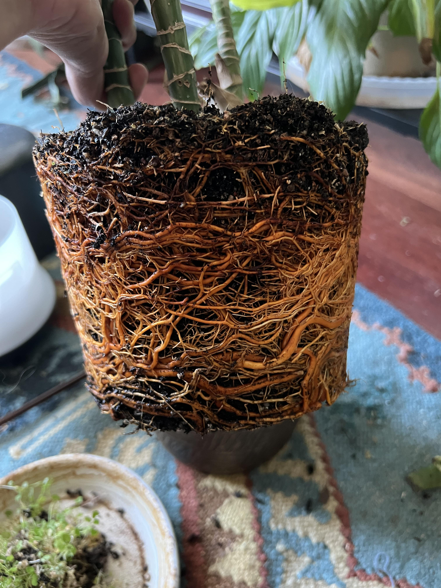

How did this happen?
This is a very common problem, usually caused by overwatering, poor soil, or soil fungi.
Tips & Remedies
Roots to a plant are like a person's nervous system. This problem is quite serious, so use the guide below as a checklist to ensure you've followed all the steps.